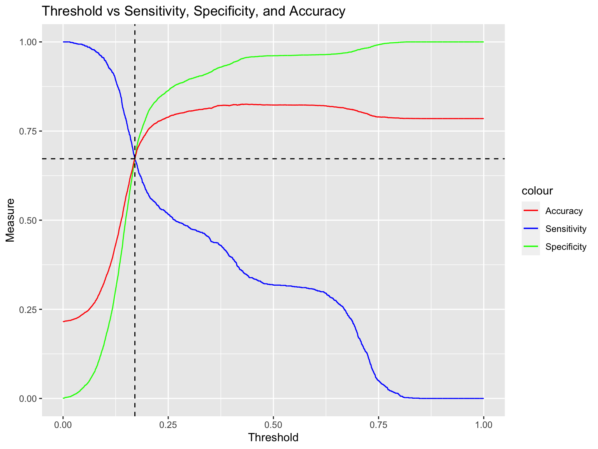

Chapter 3 Logistic Regression
3.1 Introduction
Logistic regression is one of the most easy but powerful statistical method used to analyze the relationship between a binary dependent variable and one or more independent variables. It estimates the probability of an event occurring $ p=$ and the coefficients are commonly estimated via maximum likelihood estimation.
The Assumption of Logistic Regression
The Response Variable is Binary
The Observations are Independent
There is No Multicollinearity Among Explanatory Variables
There are No Extreme Outliers
There is a Linear Relationship Between Explanatory Variables and the Logit of the Response Variable
The Sample Size is Sufficiently Large
3.2 Model Fitting
The Logistic regression model is built below
##
## Call:
## glm(formula = Default ~ ., family = "binomial", data = train_data)
##
## Deviance Residuals:
## Min 1Q Median 3Q Max
## -1.9054 -0.6095 -0.5264 -0.3221 3.6263
##
## Coefficients:
## Estimate Std. Error z value Pr(>|z|)
## (Intercept) -13.67319 87.77502 -0.156 0.87621
## SEX2 -0.16768 0.03546 -4.728 2.26e-06 ***
## EDUCATION1 10.94692 87.77272 0.125 0.90075
## EDUCATION2 10.97574 87.77272 0.125 0.90049
## EDUCATION3 10.85705 87.77273 0.124 0.90156
## EDUCATION4 9.69429 87.77396 0.110 0.91206
## EDUCATION5 9.37635 87.77325 0.107 0.91493
## EDUCATION6 10.51929 87.77399 0.120 0.90461
## MARRIAGE1 1.30127 0.63217 2.058 0.03955 *
## MARRIAGE2 1.14571 0.63223 1.812 0.06996 .
## MARRIAGE3 1.26239 0.65139 1.938 0.05263 .
## PAY_1-1 0.15835 0.07595 2.085 0.03706 *
## PAY_10 -0.39649 0.07615 -5.207 1.92e-07 ***
## PAY_11 0.86565 0.07756 11.161 < 2e-16 ***
## PAY_12 2.22171 0.08530 26.045 < 2e-16 ***
## PAY_13 2.56335 0.16513 15.523 < 2e-16 ***
## PAY_14 2.26224 0.30262 7.475 7.69e-14 ***
## PAY_15 1.05617 0.43946 2.403 0.01625 *
## PAY_16 1.94302 0.71566 2.715 0.00663 **
## PAY_17 2.10503 0.84207 2.500 0.01242 *
## PAY_18 1.48281 0.51279 2.892 0.00383 **
## AGE 0.03930 0.02002 1.963 0.04965 *
## LIMIT_BAL -0.35759 0.02375 -15.054 < 2e-16 ***
## BILL_AMT1 0.13415 0.02294 5.849 4.96e-09 ***
## PAY_AMT1 -0.24823 0.03996 -6.212 5.23e-10 ***
## ---
## Signif. codes: 0 '***' 0.001 '**' 0.01 '*' 0.05 '.' 0.1 ' ' 1
##
## (Dispersion parameter for binomial family taken to be 1)
##
## Null deviance: 25458 on 23999 degrees of freedom
## Residual deviance: 21329 on 23975 degrees of freedom
## AIC: 21379
##
## Number of Fisher Scoring iterations: 113.3 Model Interpretation
3.3.1 Model Information
Given the table above, we can gain information about the logistic regression we fit, such as :
- Estimated Coefficients for each predictor variable, which is the column named “Estimate”
- p value : The column named “Pr(>|z|)”; The null hypothesis is the corresponding coefficient is zero, if the p-value is small enough (usually 0.05), we have significant evidence to reject the null hypothesis
EDUCATION"X"(X indicate the level of education) might be the set of the most important variables because the magnitude of coefficients represent how much they impact the prediction and all of the EDUCATION"X" magnitude are large. However, the summary of the logistic regression model shows that none of the p-value of EDUCATION"X" exceeded general threshold of significance, indicating that the result is not statistically significant. Consequently, we need more evaluation criteria to indentify the importance of feature.
3.3.2 Shapley Values
The Shapley value is the average contribution of a feature value to the prediction in different coalitions. The plot above shows the mean absolute SHAP values of the logistic regression we built, which represent the each variable’s impact to prediction. Because higher absolute mean Shapley value indicates a stronger impact to the prediction, the variable PAY_1 having highest Shapley value is the most important for prediction and the LIMIT_BAL is the second.
3.3.3 Partial Dependence Plots (PDP)
3.3.3.1 Partial Dependence Plots of variable PAY_1
The PDP of Limit Balance shows that the relationship between the probability of default and PAY_1 are non-monomaniacal while all other features remain constant. More specifically, the probability of default fluctuates with the late payment status severity (The increase in delinquent months has paralleled the increase in severity) and attains highest at PAY_1 = 3. Moreover, the distribution of contribution of each level of PAY_1 is coincide with the distribution of the coefficients of each level of PAY_1.
3.3.3.2 Partial Dependence Plots of variable LIMIT_BAL
The PDP of Limit Balance shows that the relationship between the probability of default and Limit Balance are monomaniacal. More specifically, the probability of default will decrease if the limit balance increases. However, their relationship is non-linear because there is concave trend. Th trend also matches the exploratory data analysis of PAY_1 which states that the mean Limit Balance of the default clients are lower than non-default clients.
3.4 Model Evaluation

Because the model purpose is accurately predicting the credit card default clients, we should not only focus on the accuracy but also the sensitivity, which is the proportion of actual positive cases. From the plot we can find that accuracy and sensitivity achieve the best balance between correctly identifying positive cases (sensitivity) , while still maintaining a high overall rate of correct classifications (accuracy) at threshold = 0.2147215.
The best accuracy is 0.6521667 and the best sensitivity is 0.6527132.
The plot above represents the Receiver Operating Characteristic (ROC) curves of the random forest model. Area Under the Curve (AUC), which measures the area under the Receiver Operating Characteristic (ROC) curve, is a metric used to evaluate the performance of a binary classification model. Given the AUC of model = 0.707 and the TPR at the optimal threshold, we can make a conclusion that the logistic regression model is good if we focus on accuracy and sensitivity.